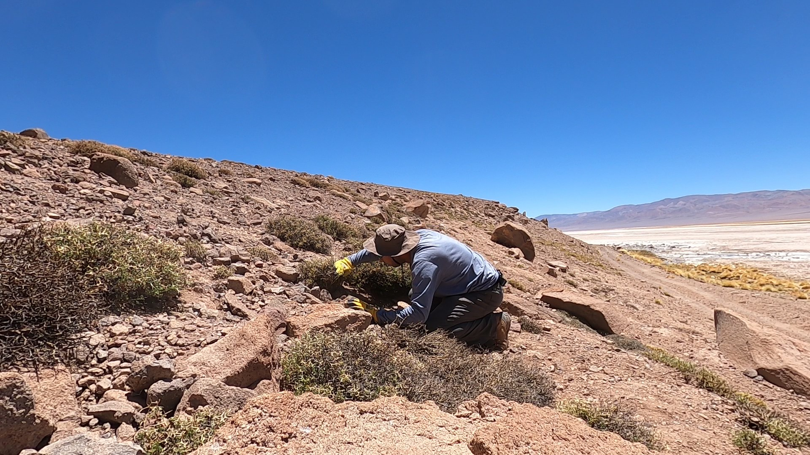

01
Línea Base Terrestre
Estudios especializados de Entomofauna y Artrópodos para EIA y DIA con metodología científica rigurosa.
- Muestreo sistemático
- Identificación taxonómica
- Informes detallados